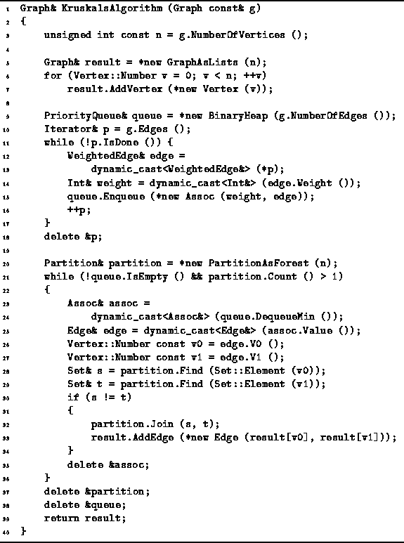

Data Structures and Algorithms
with Object-Oriented Design Patterns in C++
Data Structures and Algorithms
with Object-Oriented Design Patterns in C++
An implementation of Kruskal's algorithm is shown in Program  .
The KruskalsAlgorithm function takes as its lone argument
a const reference to an edge-weighted, undirected graph.
This implementation assumes that the edge weights are instances of the
Int class defined in Program .
The routine computes the minimum-cost
spanning tree and returns it in the form of an edge-weighted undirected graph.
The function allocates the storage, constructs the graph
and returns a reference to a Graph instance.
.
The KruskalsAlgorithm function takes as its lone argument
a const reference to an edge-weighted, undirected graph.
This implementation assumes that the edge weights are instances of the
Int class defined in Program .
The routine computes the minimum-cost
spanning tree and returns it in the form of an edge-weighted undirected graph.
The function allocates the storage, constructs the graph
and returns a reference to a Graph instance.

Program: Kruskal's Algorithm
The main data structures used by the routine are
a priority queue to hold the edges,
a partition to detect cycles and a graph for the result.
This implementation uses a BinaryHeap (Section )
for the priority queue,
a PartitionAsForest (Section )
for the partition
and a GraphAsLists for the spanning tree.
 Copyright © 1997 by Bruno R. Preiss, P.Eng. All rights reserved.
Copyright © 1997 by Bruno R. Preiss, P.Eng. All rights reserved.